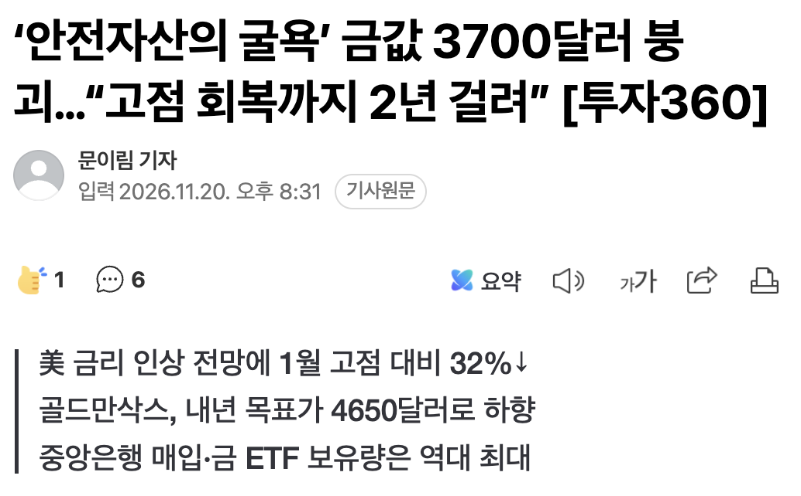
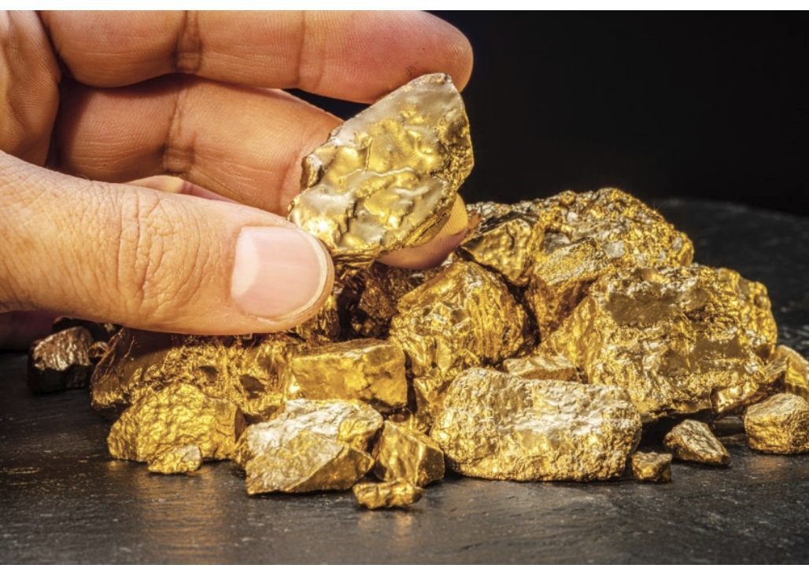
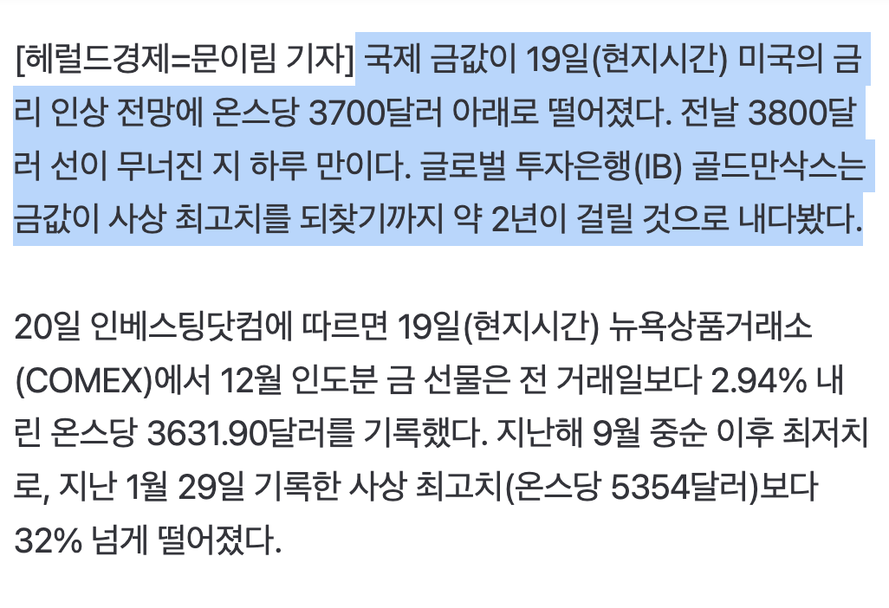
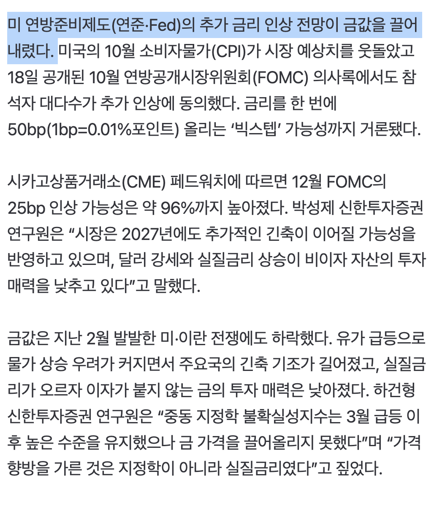
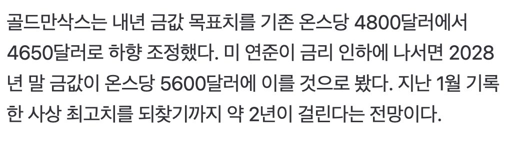
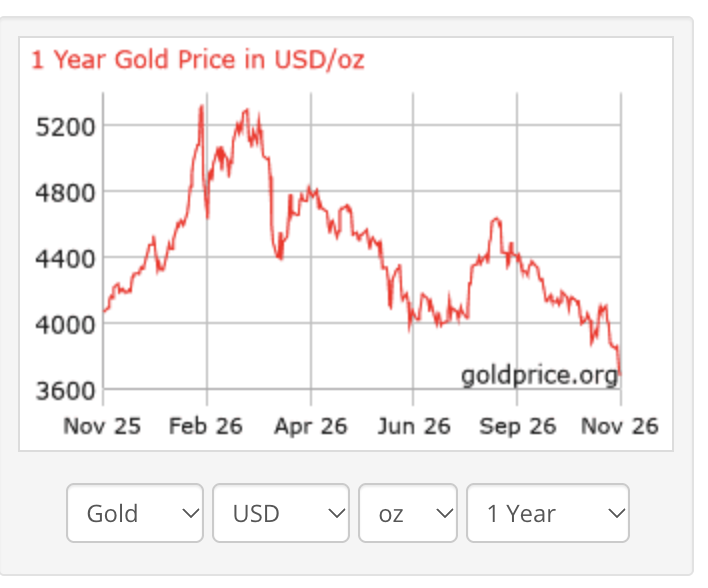

https://n.news.naver.com/article/016/0002726435?cds=news_media_pc

고점 회복까지 2년이 걸린다고 함





https://n.news.naver.com/article/016/0002726435?cds=news_media_pc

고점 회복까지 2년이 걸린다고 함
이제 금 사서 모으면 됨?
실물 비트코인 디지털 금 사이좋게 떡락
지금 모든것들이 다 떨어짐 사이좋게
킹적의 부동산 빼고
와 비트 8천 깨졌누..
역시 금리 이기는 자산 없구나..
실물비트코인 디지털금ㅋㅋㅋㅋㅋㅋㅋㅋㅋㅋ
이야 금은 회복이 된다고?
내 주식도 회복시켜주세여
상장 전 상태로 회복시키겠습니다.
그냥 모든 자산가치들이 하락중인건가 현금 빼고
킹동산이 있습니다
그건...내가 살 수 없는걸...
2년만 있으면 고점이 다시 온다고? 지금 좀 사둬야겠네
금 코인 주식 채권 다 처박고 있으면 대체 돈이 어디로 가고 있는거임?
앤트로픽
현금관망이지
그거 알면 부자됨
치약 칫솔 비누같은 생활주
부동산
사라지는거임
금리 인상기라서 돈에 반대되는 가치들은 당분간은 다떨어질 에정임
12월도 미국 금리인상 가능성이 높고 50BP 갈지도 모른다는데
(대충 황금박쥐상 조롱하는 짤)
금리 오르는데, 이자 안주는 금보다는 예금, 채권을 사는건가?
금값, 사상 첫 5000달러 돌파… 골드만삭스 “연내 5400달러까지 가능”
https://www.donga.com/news/Economy/article/all/20260126/133230191/1
골드만삭스 이새끼들 2026년 1월에는 올해말 금 전망치 5400달러로 봤음. 이 경제전문가라는 새끼들이 지구상에서 제일 쓸모없는 전문가 집단인듯. 맞추는 꼴을 못봐
걔들이 그거 맞추면 회사에서 일하겠냐만은....
그거 한국 기상청과 비슷한 수듄 아니냐
3700달러 깨졌으면 당분간 관망이죠
전세계가 부동산뻬고 멸망중인가?
개 ㅈ됫네 ㅋㅋㅋㅋ
개인이 몰리는 곳은 돈이 안된다
국장은 장소가 아니다
캬 뭐든 사는 족족 떨어지는구나 킹동산은 올라서 다행이네
금사러가야겠네
금은 떨어져도 사고 올라도 삼. 그냥 보험으로 사두는 느낌이라..
금 1냥 800만원에산 호구새끼가있다?ㅋㅋㅋ 그게나야ㅋㅋㅋ
예쁘잖아 ㅎㅎ
한잔해~
부동산 개좆창의 때도 온다
안올거같지? 앞에 뒤지게쳐맞은애들도 본인자산은무적이라고했다
스탈린옹이 말씀하시길 무적의 군대란 존재하지않는다고했다
부동산 너가 다음 목잘릴대상이다
이미 십수년째 안오르는 곳 말고 이미 수요가 넘치는 곳은 안떨어짐. 왜냐? 어딘가 살긴 살아야 하니까. 그 결과물이 지금 폭등한 지역들임
이미 수요가 넘치는 강남서초 개박살 나는 중임
세금 정책으로 그렇게 된거고 그 세금 못버티는 사람들 손바뀜 끝나고 나면 또 오르기 시작할거다. 지금 거기 가격이 떨어져서 30억-90억이야...
아가리 호가질하면서 뇌동매매나 가끔 터지던거 정상화되고 조정받는게 개박살이라니 ㅋㅋㅋㅋㅋㅋ 전혀 ㅋㅋㅋㅋ
이미 지방 부동산으 박살나고있는중 아님?
ㅋㅋㅋㅋ집없쮸?
2년만 기다리면 저 수익률을 먹는다고?
나뚜믄 오른다
2년이라곤 했지만 계속 좆창날거라 고점 회복한단 보장 없음 특히 금의 특성상 2년이 아니라 20년 뒤라고 해도 안 이상함
이히히 다 처분했지롱